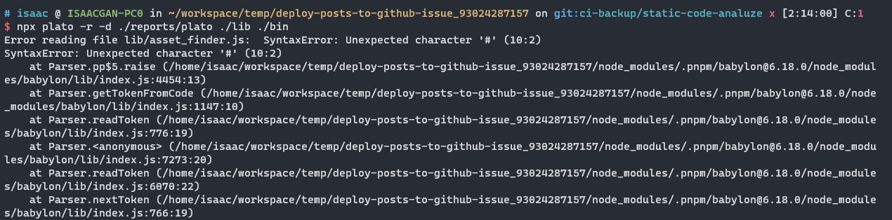

Static code analysis
摘要
静态代码分析
静态代码分析指的是在不实际执行代码的情况下，对源代码进行分析，并识别潜在问题、漏洞或代码质量违规。它是在持续集成和持续部署（CI/CD）流程中进行代码分析的自动化方法。
静态代码分析工具会检查各种编程语言的源代码，检查常见的编码错误、安全漏洞、遵循编码规范和其他最佳实践。这些工具可以检测语法错误、未使用的变量、代码重复、潜在的安全漏洞以及遵循编码风格指南等问题。
通过将静态代码分析集成到 CI/CD 流程中，开发人员可以及早发现并解决代码问题。这有助于提高代码质量、可维护性和安全性，通过在代码进入生产环境之前识别和修复问题。
内容构成
静态代码分析的实践主要包括以下几个部分:
语法检查：静态代码分析工具应该能够对 JavaScript 代码进行语法检查，确保代码符合语言规范，避免常见的语法错误。
代码规范检查：静态代码分析工具可以应用各种规范（如ESLint、JSLint等）来检查代码的风格和规范是否符合约定。这包括缩进、命名约定、注释风格等。
代码质量评估：静态代码分析工具应该能够评估代码的质量，包括代码复杂性、重复代码等方面。这些评估可以帮助开发者发现潜在的问题，改进代码结构和性能。
依赖关系分析：对于 JavaScript 项目而言，依赖关系管理是重要的一部分。静态代码分析工具可以分析项目的依赖关系，检查依赖的版本、冲突和安全漏洞，并提供相关建议。
安全漏洞检测：静态代码分析工具应该能够检测 JavaScript 代码中的常见安全漏洞，如跨站脚本攻击（XSS）、SQL 注入、不安全的数据处理等，并提供修复建议。
性能优化建议：静态代码分析工具应该能够分析代码并提供性能优化的建议，帮助开发者改善代码的执行效率、减少资源消耗等。
异步代码分析：JavaScript 中的异步编程是常见的模式之一。静态代码分析工具应该能够处理和分析异步代码，以检测可能的异步错误、回调地狱和资源竞争等问题。
可读性和一致性评估：良好的代码可读性和一致性对于维护和团队协作至关重要。静态代码分析工具应该能够评估代码的可读性和一致性，并提供有关代码风格、命名规范等方面的建议。
这些能力使得静态代码分析工具成为 JavaScript 开发中有力的辅助工具，可以帮助开发者提高代码质量、发现潜在问题，并改进代码风格和实践。常见的静态代码分析工具包括 ESLint、JSHint、JSLint、TSLint 等。
实践背景
系统
WSL2 - Debian 12
1 | cat /etc/os-release |
项目
下面将使用 deploy-posts-to-github-issue 作为实践的项目，期间部分实践内容会以此项目的克隆作为载体实现。
模块打包器：rollup
测试框架：jest
其他：
- husky：是一个用于在 Git 提交和推送前执行脚本的工具，帮助开发者在关键事件发生前自动运行定制化的操作和脚本。
目录结构
1 | deploy-posts-to-github-issue |
核心代码目录：
1 | bin/ |
分析工具
选型
| 工具 | 描述 | 提出时间 | GitHub Star 数量 |
|---|---|---|---|
| ESLint | 可配置的 JavaScript/JS 代码检查工具和静态分析器，替代 JSHint，提供更大的灵活性和可配置性 | 2013年 | 23.3k |
| JSHint | JavaScript/JS 的静态代码分析工具，支持可定制的规则，延续 JSLint 的思想，提供更好的可定制性和适应性 | 2011年 | 8.9k |
| TSLint | 针对 TypeScript 的静态代码分析工具，已被 ESLint 取代，提供静态代码检查和规范性的支持 | 2012年 | 5.9k |
| TypeScript | JavaScript 的超集，带有静态类型检查和编译时静态代码分析能力，提供更严格的类型检查和更好的 IDE 支持，增强 JavaScript 开发环境的可靠性 | 2012年 | 93.5k |
| Flow | Facebook 开发的 JavaScript/JS 静态类型检查器，为 JavaScript 开发者提供静态类型检查，提高代码质量和可维护性 | 2014年 | 22k |
从功能性与和流行趋势，TSLint 和 JSHint 已经被 ESLint 替代。而 TypeScript，与其说它是静态代码分析的工具，不如说它是个类似JS的语言。当然它具备静态代码分析的能力，但如果已经开发到一定程度的项目所使用的开发语言是JS的话，使用TS的会有不小的迁移成本！
剩下的是 ESLint 和 Flow，它们提出时间和流行程度都差不多。不妨针对它们做一下对比分析。
下面是使用表格对比 ESLint 和 Flow 的功能：
| 功能 | ESLint | Flow |
|---|---|---|
| 代码检查 | ✔️ | ✔️ |
| 类型检查 | ❌ | ✔️ |
| 静态类型推断 | ❌ | ✔️ |
| 编译时类型检查 | ❌ | ✔️ |
| 支持 JavaScript | ✔️ | ✔️ |
| 支持 TypeScript | ✔️ | ❌ |
| 可配置性 | 高 | 中 |
| 社区支持 | 大型活跃社区，广泛的插件和扩展库可用 | 较小的社区，插件和扩展库相对较少 |
| IDE 集成 | 广泛支持，与许多主流编辑器（如 VS Code、Sublime Text）集成良好 | 有限的 IDE 集成，可能不如 ESLint 的支持广泛和完善 |
| 项目可移植性 | 高 | 较低，Flow 的类型注释和配置文件需要进行迁移和调整才能与其他工具兼容 |
需要注意的是，ESLint 和 Flow 在某些功能上有所重叠，但也有一些区别。ESLint 主要关注代码规范和质量检查，而 Flow 则专注于静态类型检查和类型推断。ESLint 的可配置性和社区支持相对较高，适用于 JavaScript 和 TypeScript 项目，并与各种编辑器集成良好。Flow 在类型检查和静态类型推断方面表现出色，但它的社区支持相对较小，与编辑器的集成程度可能不如 ESLint 那么广泛。此外，如果要将项目从 Flow 迁移到其他工具或框架，可能需要进行一些调整和改动。
ESLint
ESLint 是一个用于检查和规范 JavaScript 代码的开源工具。它可以帮助开发者在编写代码时发现潜在的问题、遵循一致的代码风格，并提供自定义的代码规则。ESLint 具有高度可配置性和灵活性，可以适应不同项目和团队的需求。
以下是 ESLint 的一些主要特点和功能：
代码规范检查： ESLint 可以静态地分析 JavaScript 代码，并根据预定义的规则集检查代码是否符合规范。它可以发现常见的错误、潜在的问题和不一致之处，如未声明的变量、使用未定义的函数、潜在的歧义等。
可配置性： ESLint 具有高度的可配置性，允许开发者根据项目需求和团队的代码风格指南自定义规则。你可以启用、禁用或修改规则，并设置不同的错误级别（警告或错误）。此外，ESLint 还支持配置文件的继承和共享，以便在多个项目中共享和重用配置。
插件和扩展： ESLint 具有丰富的插件生态系统，可以通过插件扩展其功能。插件可以添加额外的规则、支持其他文件类型（如 TypeScript、Vue 等），或提供特定框架或库的规则集。通过安装和配置这些插件，你可以在 ESLint 中使用更多的规则和功能。
自动修复问题： ESLint 具备自动修复问题的能力，可以通过 –fix 标志自动修复一些常见的问题，如不一致的缩进、缺少分号等。这样可以减轻开发者手动修复问题的负担，并提高代码的一致性。
与编辑器和构建工具的集成： ESLint 可以与各种编辑器和构建工具集成，以提供实时的代码检查和反馈。大多数编辑器都支持 ESLint 插件，可以在保存文件时自动运行 ESLint，并在编辑器中显示错误和警告。此外，ESLint 还可以与构建工具（如 webpack、gulp 等）集成，以便在构建过程中进行代码检查。
ESLint 是一个非常强大和流行的工具，被广泛用于 JavaScript 项目中。它可以帮助开发团队保持一致的代码风格、规范代码质量，并提高代码的可读性和可维护性。通过使用 ESLint，开发者可以在早期发现和解决潜在的问题，提高代码的可靠性和稳定性。
eslint 对代码静态分析实践的部分：
语法检查；
代码规范检查；
代码质量评估；
安装
1 | pnpm add --save-dev eslint |
初始化
使用 eslint 提供的能力进行初始化。
1 | npm init @eslint/config |

上面 init 命令分别做了下面几件事：
配置 Eslint 的能力范围，prompt 提供三个选项：
- 仅作代码检查；
- 代码检查与反馈问题；
- 代码检查、反馈问题以及格式化。
指定模块风格：
- JavaScript modules；
- CommonJS；
- 不设置。
选择框架，目前会提供
Reat和Vue或者不设置；配置是否使用了 TypeScript；
配置项目的运行时，Node 或 浏览器（但貌似有 Bug）；
选择代码风格的配置方式，提供下面两种方式：
- 先择现成的解决方案；
- 自定义配置；

在初始化过程中，需要我们选择 Eslint 代码风格。在 Prompt 中可以看到有 Airbnb、Standard，Google 和 XO 四种提供。下面以表格的形式对四种规范做简短说明。
| 代码规范 | 特点 | 缩进 | 引号 | 分号 | 严格相等和不严格相等 | 对象字面量属性排序 | Github Star |
|---|---|---|---|---|---|---|---|
| Airbnb | - 强调代码的可读性和一致性 - 鼓励使用现代的JavaScript语言特性和最佳实践 - 包括对代码风格、命名约定、缩进、注释等的建议 - 要求使用ES6及以上版本的JavaScript并强制一些严格的规则 | 2 个空格 | 单引号 | 可选 | 推荐使用 | 推荐排序 | 136k |
| Standard | - 简洁明了的JavaScript代码规范 - 减少代码样式的争议 - 鼓励一种统一的代码风格 - 使用两个空格的缩进、禁止使用分号等的具体规则 - 遵循ES5的语法 | 2 个空格 | 单引号 | 禁止 | 推荐使用 | 推荐排序 | 28.4k |
| - Google公司内部广泛使用的规范 - 强调可读性、可维护性和性能 - 提供了详细的代码编写指南 - 支持ES5和ES6语法 - 提供一些特定于Google编码风格的规则 | 2 个空格 | 双引号 | 强制 | 推荐使用 | 推荐排序 | 1.7k | |
| XO | - 具有严格规则集的JavaScript代码规范和代码检查工具 - 基于ESLint构建 - 提供零配置的规范 - 强制执行高级规则，如使用ES6模块、禁止使用 console等- 提供可选的规则来适应不同的开发需求 | 2 个空格 | 单引号 | 禁止 | 推荐使用 | 推荐排序 | 248 |
请注意，以上表格只列出了一些主要的规范特点，并不能穷尽所有规范的细节。对于更详细的规范内容和具体规则，建议查阅各自的官方文档或 GitHub 仓库。选择适合自己或团队的代码规范时，可以深入研究每个规范的详细规则，并根据实际需求进行定制。
在 init 的过程中选择了 airbnb。airbnb发布的ESLint配置规则广为人知,我们可以从以下几个方面对其规则进行分类:
代码质量：包含无用代码检测、最佳实践、复杂度限制等,如no-unused-vars、no-implicit-globals、complexity等。
错误防范：包含可能导致错误的代码模式检测,如no-console、no-debugger、no-alert等。
风格统一：包含代码风格方面的规则,强制一致的代码风格,如quotes、indent、space-before-function-paren等。
ES6优先：包含优先使用ES6新特性的规则,如prefer-const、prefer-rest-params、prefer-spread等。
浏览器环境：包含针对浏览器环境的规则,如no-restricted-globals、no-alert等。
Node.js环境：包含针对Node.js环境的规则,如handle-callback-err、no-mixed-requires等。
规范与习惯：根据通用代码编写规范制定的规则,如camelcase、new-cap、curly等。
可读性：关注代码可读性的规则,如max-len、max-lines、max-params等。
变量声明：规范变量声明方式的规则,如no-var、prefer-const等。
以上分类让我们更直观地看到airbnb规则的覆盖面和侧重点。
初始化完成后，会得到如下的配置文件：
1 | // .eslintrc.cjs |
其中 env 的配置与上面 init 过程中选择运行时明显不同，下面手动修改为：
1 | // ... |
下面对生成的配置文件中几个配置项做简单说明：
env：指定代码运行的环境，如浏览器环境 (browser)、Node.js 环境 (node) 等；extends：引用其他配置文件或扩展，可以是已经定义好的配置（如 airbnb-base）、共享配置（如 eslint:recommended）或自定义的配置；globals：定义全局变量，避免因为全局变量未定义而产生警告；parser：指定代码解析器，例如 Babel 解析器 (babel-eslint) 或 TypeScript 解析器 (@typescript-eslint/parser)；parserOptions：指定解析器选项，如 ECMAScript 版本 (ecmaVersion)、源代码类型 (sourceType)、额外的语言特性支持等；plugins：加载并使用 ESLint 插件，扩展额外的规则和功能；rules：定义规则，用于检查和强制执行代码的编码规范，可以启用、禁用、配置规则的错误级别等；overrides：允许对特定文件或文件类型进行额外的配置，可以覆盖全局配置；
ESLint 常用的插件包括:
eslint-plugin-react - 检查 React 代码,支持 JSX 语法等。
eslint-plugin-vue - 检查 Vue 代码,支持 *.vue 文件。
eslint-plugin-angular - 检查 Angular 代码,支持指令、模块等特性。
eslint-plugin-jquery - 检查 jQuery 代码。
eslint-plugin-node - 添加Node.js环境下的JavaScript代码检查。
eslint-plugin-import - 检查ES6+ 的 import/export 语法。
eslint-plugin-jsx-a11y - 辅助检查JSX元素的可访问性。
eslint-plugin-promise - 添加Promise相关的规则。
eslint-plugin-standard - 实现standard代码风格的规则。
eslint-plugin-html - 检查HTML文件中的JavaScript代码。
eslint-plugin-markdown - 检查Markdown文件中的代码。
eslint-plugin-compat - 检查浏览器兼容性问题。
eslint-plugin-jest - 检查Jest测试框架的代码。
eslint-plugin-typescript - 添加TypeScript语法支持。
eslint-plugin-security - 用于检测 JavaScript 代码中的潜在安全漏洞。它提供了一系列规则，用于查找并警告可能导致安全问题的代码模式。
通过使用不同的插件可以大大扩展ESLint的功能范围,适应不同的项目需求。
扫描代码
1 | npx eslint ./lib/ ./bin/ |

质量报告
1 | npx eslint ./lib ./bin --format=html --output-file=reports/eslint-report.html |
使用 anywhere 启动 http 服务:
其他支持的输出的格式：
checkstyle：以 Checkstyle XML 格式输出，适合与其他工具集成；
compact：以紧凑的格式输出，适合在终端上显示；
html：以 HTML 格式输出，适合在浏览器中查看；
jslint-xml：以 JSLint XML 格式输出，适合与其他工具集成；
json-with-metadata：以 JSON 格式输出，包含元数据信息；
json：以纯 JSON 格式输出；
junit：以 JUnit XML 格式输出，适合与持续集成工具集成；
stylish：以类似于代码样式的格式输出，适合在终端上显示；
tap：以 TAP（Test Anything Protocol）格式输出，适合与测试框架集成；
unix：以类 Unix 风格的格式输出，适合在终端上显示；
visualstudio：以 Visual Studio Code 的问题报告格式输出，适合在编辑器中显示。
自动修复
使用 --fix 可选项修复部分问题。
1 | npx eslint --fix ./lib/ ./bin/ |
修复后的报告见下。对比前面的报告，eslint 修复了大部分问题，但实际上 eslint 尽可以修复部分类型的问题。
以下是一些常见的 ESLint 可以自动修复的问题类型：
格式问题：例如缩进、空格、换行等方面的问题可以通过自动修复功能进行修复；
引号问题：例如单引号和双引号之间的一致性问题可以自动修复；
无用代码：例如未使用的变量、未使用的导入等可以通过自动修复进行删除；
标准化问题：例如统一函数命名、统一变量命名等可以通过自动修复进行标准化；
基本语法问题：例如缺少分号、多余的逗号等可以通过自动修复进行修复。
在了解自动修复的相关内容时，另一款据说相较 Eslint 更强的工具，prettier 出现在我的视线。
根据 prettier 的文档（Integrating with Linters）指引安装了扩展（eslint-config-prettier）和插件（eslint-plugin-prettier）。最终修过没有达到预期，剩下大部分问题依然无法自动格式化，下面是使用 prettier 前（左）后（右）的对比：

使用后，问题从162个减少到153个，共11个；
对比后得知，被自动修复的问题是
max-len类问题（如下）；1
11:1 Error This line has a length of 105. Maximum allowed is 100. max-len
根据 ESLint 报告里面的错误信息,可以将检测到的问题分类如下:
- 导入语句问题
Unexpected use of file extension “js” for imports: 应该直接导入模块名,不需要添加.js后缀
Prefer default export on a file with single export: 当模块只有一个导出时应设置为default导出
- 代码质量问题
- no-use-before-define: 在定义前使用变量
- no-nested-ternary: 不要嵌套三元表达式
- no-plusplus: 不要使用++/–运算符
- no-restricted-syntax: 不允许使用语法结构generate/yield
- 最佳实践问题
- no-param-reassign: 不要修改函数参数
- no-console: 不要使用console语句
- no-alert: 不要使用alert
- 风格问题
- camelcase: 变量名应使用驼峰命名
- max-classes-per-file: 每个文件类的数量不应超过1个
- 可读性问题
- no-magic-numbers: 不要使用难懂的数字常量
- no-nested-ternary: 不要嵌套三元表达式
- 未使用变量问题
- no-unused-vars: 定义后未使用的变量
- 循环问题
- no-loop-func: 循环中不要定义函数
以上这些问题都是确实 Eslint 和 prettier 无法自动格式化的问题。实际上，EsLint 的官网也有对那些规则无法格式化有做简短说明，可查阅：Rules Reference。

安全检测
eslint-plugin-security：https://github.com/eslint-community/eslint-plugin-security
ESLint内置对XSS漏洞的检测规则,但是需要安装额外的插件才能启用。
具体操作如下:
- 安装eslint-plugin-security插件
1 | npm install eslint-plugin-security |
- 在.eslintrc.js配置文件中添加plugins和rules:
1 | module.exports = { |
- 运行ESLint,它会检查可能导致XSS的内容注入风险。
如变量直接插入到HTML中而未经过滤、模板字符串注入等情况。
- 需要进一步配置白名单或黑名单来去除误报。
使用这个插件可以在开发阶段及早发现XSS问题,但不可完全替代动态测试。
IDE 集成
TODO
强制执行
git-hook
TODO
小结
- 语法检查
- 代码规范检查
- 代码质量评估
- 依赖关系分析
- 安全漏洞检测
- 性能优化建议
- 异步代码分析
- 可读性和一致性评估
统计报告
Plato
Plato 是一个基于 JavaScript 的代码分析和可视化工具，用于生成代码复杂度报告和可视化图表。它提供了对圈复杂度、函数长度、类复杂度等指标的详细分析和可视化展示。
安装与使用
1 | 安装 |
这句命令是使用 plato 工具生成代码复杂度报告的命令。它的作用是在指定的目录下分析 JavaScript 文件，并生成递归的代码复杂度报告，报告输出到 ./reports/plato 目录。同时，还会使用指定的 ESLint 配置文件进行代码分析。
下面对命令中的各个部分进行解释：
-r: 表示生成递归报告。递归报告会分析指定目录下的所有 JavaScript 文件及其子目录中的文件。-d ./reports/plato:-d是plato的一个命令行选项，用于指定报告输出目录。在这个命令中，将报告输出到./reports/plato目录。-e .eslintrc.cjs:-e是plato的一个命令行选项，用于指定 ESLint 配置文件。在这个命令中，使用.eslintrc.cjs文件作为 ESLint 的配置文件。./lib ./bin:./lib ./bin是指定要分析的 JavaScript 文件或目录。在这个命令中，分析./lib和./bin目录下的 JavaScript 文件。
遇到的问题
配置文件扩展名
遇到第一个问题：不支持 cjs 扩展名的配置文件，根据提示推断是要求 json 格式的。
这个先按下，跳过指定 eslint 的配置文件。
1 | npx plato -r -d ./reports/plato ./lib ./bin |
出现了第二个问题：plato 不支持 ES6+ 的 Class 死有属性语法。时至今日，不支持这个语法，或许可以认为这个工具已经被抛弃。从目前的状况确实是这样，最后一次更新已经是 7 年前！但是它确实目前我可以找到功能比较完备的带质量报告生成工具。

既然是语法的兼容性问题，那就用 babel 做转译兼容。最终目的是在保留目录解构的前提下，做最小程度的兼容：
安装 babel 相关 pkg：
1 | pnpm add --save-dev @babel/core @babel/cli |
添加插件编译私有方法与属性：
1 | pnpm add --save-dev \ |
配置文件（.babelrc）
1 | { |
编译与生成质量报告：
1 | rm -rf temp/dist ./reports/plato && \ |
点操作符的可选语法
出现另外的问题：plato 不支持点操作符的可选语法。安装 @babel/plugin-transform-optional-chaining 插件转译此语法，再此生成报告：
生成 html 格式的质量报告，使用 anywhere 渲染后，在浏览器打开：

Plato报告概述
Plato 提供了一系列质量指标来评估代码的质量和复杂性。以下是一些常见的 Plato 提供的质量指标：
Lines of Code(LOC) - 源代码总行数。
Total Complexity - 整体复杂度评分。增加表示代码整体复杂度上升。
Average Complexity - 每个函数的平均复杂度。增加表示每个函数复杂度提高。
Function Declarations - 函数声明数量。增加表示函数数增多。
Global Variables - 全局变量使用数量。增加表示使用更多全局变量。
Cyclomatic Complexity - 圈复杂度。增加表示代码路径增加,逻辑更复杂。
Halstead metrics - 几项代码复杂度度量。提高表示代码更复杂。
Maintainability Index - 可维护性指数。下降代表可维护性降低。
Lint Errors - Lint检查出的错误数。增加表示代码质量问题更多。
Estimated Errors - 预测出的错误数。增加表示可能出错机会上升。
综上, Plato的指标上升通常代表代码质量和可维护性下降,复杂度提高,这可以帮助我们分析和改进代码。
最终实现
Palto 报告
使用 babel 解决 palto 的兼容问题。babel 将核心源码配合下面示例中的四个插件做最小程序的编译，输出到 ./temp/dist 目录。
palto 基于 ./temp/dist 目录的代码生成报告，输出到 ./reports/plato。
./scripts/plato.report.js：
1 | import { execSync } from 'child_process'; |
package.json：
1 | "scripts": { |
组合 Eslint
简单组合 Eslint。同时生成 Eslint 与 Palto 报告。
package.json：
1 | "scripts": { |
使用 npm run static-report 生成两份报告。
小结
进一步加强“代码质量评估”部分的实践。增加更多的代码质量指标，比如“整体复杂度”、“圈复杂度”、“预测出的错误数”等等。
但是由于 Palto 对于 ES6+ 的语法兼容性不足，以致需要使用 Babel 做向下兼容的编译。导致报告中出现非预期的兼容性代码和报告内容，让报告的可读性下降。虽然如此，Palto 生成的报告依然比Eslint的更加详尽。
依赖分析
下面将使用其他工具针对 “依赖关系分析” 部分进行实践。将列出常用几款工具做对比，然后会选择其中一款进行安装与使用。
常见工具
| 工具 | 指标 | 说明 | GitHub Star |
|---|---|---|---|
| Code Maat ↗ | - 模块间的循环依赖关系 - 无效引用 - 模块的入度和出度 - 模块的内部复杂性 - 模块的外部复杂性 - 模块的深度 - 模块的大小 | Code Maat 是一个通用的代码度量工具，支持多种指标，包括循环依赖关系、无效引用、模块的入度和出度、模块的内部复杂性、模块的外部复杂性、模块的深度和模块的大小等。它提供了灵活的配置选项和可视化功能，适用于多种编程语言。 | 2.2k |
| Dependency-Cruiser ↗ | - 可持续性指标 - 简单性指标 - 复杂性指标 - 规模指标 | Dependency-Cruiser 提供了可持续性指标、简单性指标、复杂性指标和规模指标。可持续性指标包括模块间的循环依赖关系和无效引用。简单性指标包括模块的入度和出度、模块的内部复杂性。复杂性指标包括模块的外部复杂性和模块的深度。规模指标包括模块的大小。它提供了自定义规则和配置的功能，可用于 JavaScript 项目的依赖分析和优化。 | 4.4k |
| Webpack Bundle Analyzer ↗ | - 模块大小 - 模块依赖关系 - 模块的引用路径 - 模块的体积占比 | Webpack Bundle Analyzer 提供了模块大小、模块依赖关系、模块的引用路径和模块的体积占比等指标。它通过可视化图表和图形的方式展示这些指标，帮助你分析和优化 Webpack 打包后的代码。 | 12.4k |
| Rollup Plugin Visualizer ↗ | - 模块大小 - 模块依赖关系 - 模块的引用路径 - 模块的体积占比 | Rollup Plugin Visualizer 提供了模块大小、模块依赖关系、模块的引用路径和模块的体积占比等指标。它通过可视化图表和图形的方式展示这些指标，帮助你分析和优化使用 Rollup 打包后的代码。 | 1.5k |
Code Maat 是一个通用的代码度量工具，由于它是基于 Java 开发的，所以要在 Node.js 环境中安装和使用 Code Maat，你需要确保你的系统已经安装了 Java 运行时环境 (JRE) 或者 Java 开发工具包 (JDK)。
考虑到环境配置的复杂度问题，Code Maat 的优先级会下降，暂不考虑它！
Webpack Bundle Analyzer 是以往有使用过的一款工具，确实不错。它提供的参考指标也符合预期，流行程度也是上面 4 款中最高的，但是考虑到当前实践项目的背景（rollup），因此优先级也是往下降的。
因此，就目前情况优先考虑 Rollup Plugin Visualizer 和 Dependency-Cruiser。
预览效果


下面将先后安装 Rollup Plugin Visualizer 和 Dependency-Cruiser，在看它们最后的实际效果。如果两者相差不大，考虑到实践项目背景，当优先选择前者。
Rollup Plugin Visualizer
安装
1 | pnpm add --save-dev rollup-plugin-visualizer |
配置
修改 rollup 配置文件
1 | import { terser } from 'rollup-plugin-terser'; |
见配置文件，rollup-plugin-visualizer 提供 5 中输出样式，其中 list 和 raw-data 输出的是数据，而其他则是输出可视化图表。
生成图表
执行 build 脚本触发 rollup 构建。
1 | npm run build |
下面是生成的三种可视化的依赖图表：
rollup-plugin-visualizer 提供了以下几种可视化图表来帮助分析 Rollup 打包的结果：
Sunburst Chart（旭日图）
旭日图以圆形层级结构的方式展示模块之间的依赖关系。每个模块在图表中表示为一个扇形区域，其大小表示模块的体积或大小。模块之间的依赖关系通过扇形的嵌套关系来表示。你可以通过旭日图快速了解模块之间的依赖关系和体积占比。
预览效果
Treemap Chart（矩形树图）
矩形树图以矩形的层级结构展示模块之间的依赖关系和体积占比。每个模块在图表中表示为一个矩形，其大小表示模块的体积或大小。模块之间的依赖关系通过矩形的嵌套关系来表示。你可以通过矩形树图直观地了解模块之间的依赖关系和体积占比。
预览效果
Network Graph（网络图）
网络图以节点和边的形式展示模块之间的依赖关系。每个模块在图表中表示为一个节点，模块之间的依赖关系通过边连接。你可以通过网络图观察模块之间的依赖关系和体积占比，并通过交互式操作来探索图表。
预览效果
小结
上面是对 Rollup Plugin Visualizer 的实践。它包含 5 种依赖分析输出格式，其中两种原始数据（list 和 raw-data），三种 HTML 可视化报告（Sunburst Chart、Treemap Chart 和 Network Graph）
HTML 可视化报告中，除了提供模块间的依赖关系信息外，每个模块还提供 Rendered （原始大小）、Gzip 算法压缩后大小 和 Brotli 算法压缩后的大小。
安装简单，无单独的配置文件。需要在 rollup 配置文件中引入，声明依赖报告的输入输出。不能单独生成报告，需要配置 rollup 打包流程使用。另外，三个可视化报告不支持一同输出到同一个 HTML 文件，相互独立。
Dependency cruiser
安装与配置
安装：
1 | pnpm add --save-dev dependency-cruiser |
初始化，将在当前目录下生成 .dependency-cruiser.cjs 文件。
1 | npx depcruise --init |
生成报告
根据README的指引，可以使用以下命令生成依赖报告：
1 | npx depcruise src --include-only "^src" --output-type dot \ |
--include-only "^src":--include-only参数用于指定只包括满足特定正则表达式的文件或目录。在这个命令中，它指定只包括以src开头的文件或目录。--output-type dot:--output-type参数用于指定生成的输出类型。在这个命令中，它指定生成 DOT 格式的输出。dot -T svg:dot是 GraphViz 工具包中的一部分，用于将 DOT 格式的输入转换为不同的图形输出格式。-T svg参数指定将输出转换为 SVG 格式。> dependency-graph.svg:>是重定向操作符，用于将命令的输出重定向到一个文件。在这个命令中，它将生成的 SVG 图形输出重定向到名为dependency-graph.svg的文件。
dot 是 GraphViz 工具包中的一部分，因此需要安装相关的工具，graphviz。
1 | sudo apt update |
准备工作完成，下面根据上面的指引略作修改，然后生成报告：
1 | npx depcruise bin --output-type dot \ |
预览效果
生成交互性更强的报告：
1 | npx depcruise -v -T dot bin \ |
预览效果
上面两种方式生成的报告都依赖系统软件 graphviz，在特定情况下，或许无法安装。下面介绍无需系统软件便可生成的方式。
1 | dependency-cruise -T html -f dependencies.html bin |
预览效果
除了上面实践的 3 种报告外，Dependency cruiser 还支持更多的报告输出方式，想要了解更多可查阅：dependency-cruiser command line interface。
集成到 IDE
Dependency cruiser 除了可以通过 CLI 生成报告外，还可以集成到 VS Code。见下：
Extension ID：juanallo.vscode-dependency-cruiser
预览效果
小结
上面做了 Dependency cruiser 的实践。生成报告前需要初始化配置文件。实践了 3 种报告，其中 2 种需要依赖系统软件 graphviz，1 种不需要。前 2 种类似，区别在于可交互性（可高亮模块的引入路线），相较后面 1 种可读性强。
Dependency cruiser 支持配置文件，可配置多种规则和报告输出格式，除了上面实践的三种外，还支持很多，大部分依赖系统软件，或需要特定应用层级软件查看，更多信息可查阅 dependency-cruiser command line interface。
Dependency cruiser 除了支持 CLI 单独生成依赖报告外，还支持集成到 IDE（VS Code），可以查阅单个模块的依赖上下文，生成的报告支持在 VS CODE 跳转到相应模块文件。
Dependency cruiser 提供多种样式与格式的依赖图，可读性强。它专注于依赖关系的描述，无其他更多信息提供，比如模块大小，压缩后大小等等。
最终实现
从上面 rollup-plugin-visualizer 与 Dependency cruiser 的实践中发现，相比前者，后者的可读性更强，如果单纯追求可视化依赖关系，Dependency cruiser 是不二之选。可惜 Dependency cruiser 仅仅如此，若果可以展示模块大小等等数据会更优，而这是 rollup-plugin-visualizer 相对它的优势。
因此何不将两者结合，毕竟它们是开发的辅助工具，它们臃肿与否不影响最终源码体积。
上面对 rollup-plugin-visualizer 的最终实现已经说明，不做赘述，下面说明 Dependency cruiser 的最终实现并将两者结合。
首先，生成交互性更强的报告，输出到与 rollup-plugin-visualizer 相同的报告目录
1 | npx depcruise -v -T dot bin \ |
将此命令与 rollup 的 build 关联到一起：
1 | "scripts": { |
如此这边，只有运行 npm run build，即可生成以上 rollup-plugin-visualizer 与 Dependency cruiser 的 4 个依赖报告。
为方便查看，当增加入口查看这 4 个报告。添加一个简单的 index.html 文件到 reports/visualizer/ 目录下，通过 iframe 引入 4 个报告的 html 文件。
reports/visualizer/index.html
<!DOCTYPE html>
<html lang="en">
<head>
<meta charset="UTF-8">
<meta name="viewport" content="width=device-width, initial-scale=1.0">
<title>visualizer</title>
<style>
html, body {
margin: 0;
padding: 0;
}
body {
margin: auto;
}
</style>
</head>
<body>
</body>
<script>
const getViewportSize = () => {
const width = window.innerWidth || document.documentElement.clientWidth || document.body.clientWidth;
const height = window.innerHeight || document.documentElement.clientHeight || document.body.clientHeight;
return {
width,
height
};
};
const insertIframeAfterPageLoad = ({ title, src, width, height }) => {
const iframe = document.createElement('iframe');
iframe.title = title;
iframe.src = src;
iframe.width = Math.ceil(width);
iframe.height = Math.ceil(height);
iframe.style = "border:none;";
document.body.appendChild(iframe);
};
window.addEventListener('load', () => {
const viewportSize = getViewportSize();
let size = viewportSize.width / 2 - 10;
insertIframeAfterPageLoad({
src: './network.html',
title: 'network',
width: size,
height: size,
});
insertIframeAfterPageLoad({
src: './sunburst.html',
title: 'sunburst',
width: size,
height: size,
});
insertIframeAfterPageLoad({
src: './dependency.html',
title: 'dependency',
width: size,
height: size,
});
insertIframeAfterPageLoad({
src: './treemap.html',
title: 'treemap',
width: size,
height: size,
});
});
</script>
</html>
预览效果
小结
以上是对依赖分析的实践。挑选了常见的分析工具（Code Maat、Dependency-Cruiser、Webpack Bundle Analyzer 和 Rollup Plugin Visualizer）对比，结合实际请款，选择 Dependency-Cruiser 和 Rollup Plugin Visualizer 作为实践内容。分别先后安装 Rollup Plugin Visualizer 和 Dependency-Cruiser。
Rollup Plugin Visualizer 是 rollup 常见，需要配置 rollup 的打包流程使用。它支持 Sunburst Chart、Treemap Chart 和 Network Graph 3 种可视化报告，除了依赖关系信息外，还提供压缩与原始的模块大小信息。
Dependency-Cruiser 单纯提供依赖关系信息，支持多种样式报告，但多依赖系统软件。它生成的报告，在模块依赖关系的信息方面比起 Rollup Plugin Visualizer 更强。
鉴于 Rollup Plugin Visualizer 与 Dependency-Cruiser 有一定的互补关系，在实践中，选择同时生成它们的报告，总共 4 个可视化的报告，为方便对比查看，通过 iframe 将它们缝合到一个 HTML 文件中。
下面回顾 内容构成 中提到的一系列实践内容：
- 语法检查
- 代码规范检查
- 代码质量评估
- 依赖关系分析
- 安全漏洞检测
- 性能优化建议
- 异步代码分析
- 可读性和一致性评估